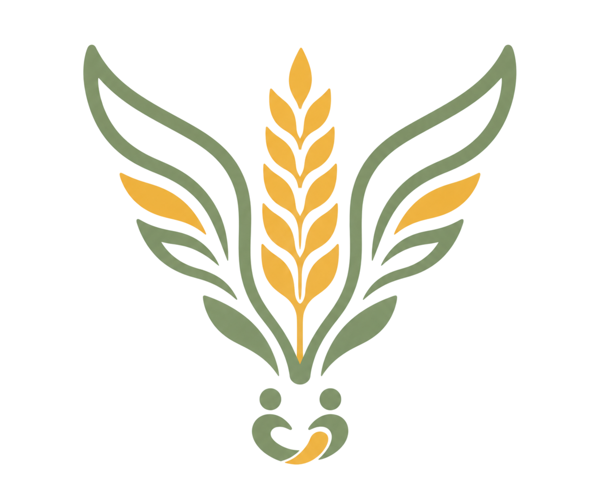

KKN 84.144 • UPN Veteran YogyakartaMengenal dan mendukung usaha mikro, kecil, dan menengah warga Dusun Demangan, Desa Ngluwar, Magelang — diinisiasi sebagai program kerja KKN 84.144 UPN Veteran Yogyakarta.
Klik pin di peta untuk melihat lokasi masing-masing UMKM di Dusun Demangan.
Klik kartu untuk mengetahui lebih detail profil, produk, dan cara menghubungi setiap UMKM.
Mahasiswa UPN Veteran Yogyakarta yang mengabdi di Dusun Demangan, Desa Ngluwar, Kecamatan Ngluwar, Kabupaten Magelang — Semester Genap 2025/2026.
Dusun Demangan merupakan salah satu dusun di Desa Ngluwar, Kecamatan Ngluwar, Kabupaten Magelang, Provinsi Jawa Tengah. Secara administratif terdiri atas 1 RW dan 5 RT dengan karakter pedesaan yang ditandai pemukiman penduduk, lahan pertanian, dan lingkungan hijau.
Iklim tropis dengan dua musim mendukung kesuburan tanah dan kegiatan pertanian sebagai sektor utama. Masyarakatnya dikenal ramah, gotong royong, dan menjunjung nilai-nilai keagamaan serta adat istiadat — salah satunya melalui kesenian tradisional Kridho Mudho Manunggal.
Dusun Demangan memiliki potensi budaya yang terjaga melalui kesenian tradisional, kearifan lokal, dan semangat wirausaha warganya. Dari produk pertanian hingga UMKM beragam sektor, setiap usaha mencerminkan nilai dan identitas khas dusun ini.